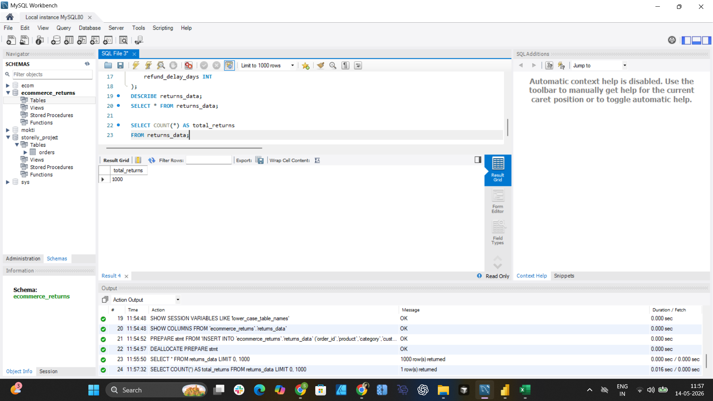
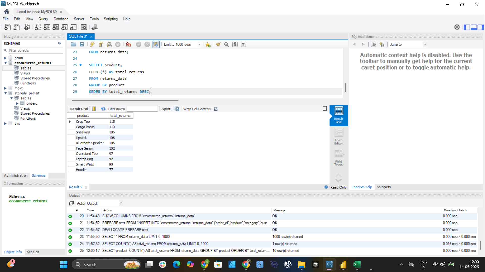
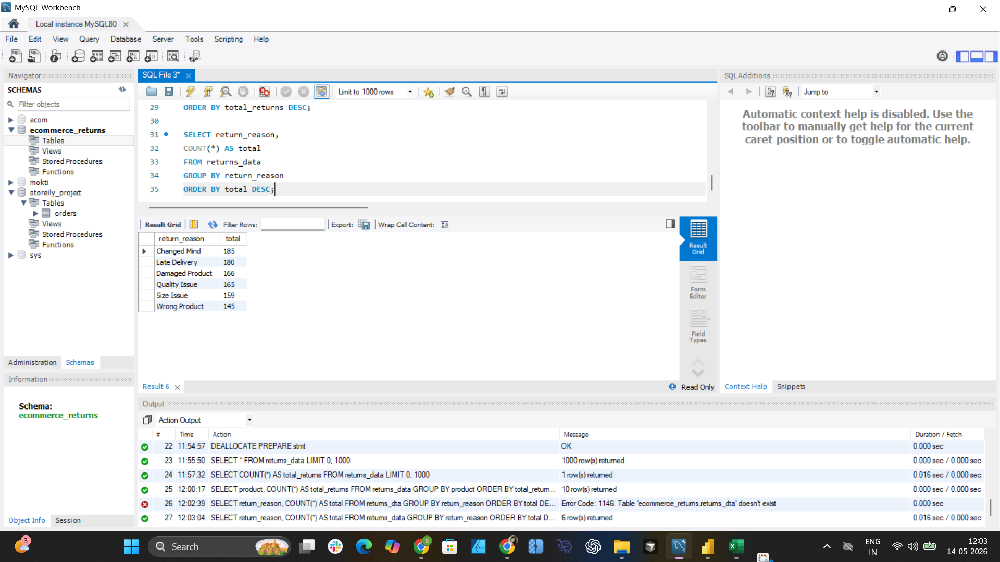
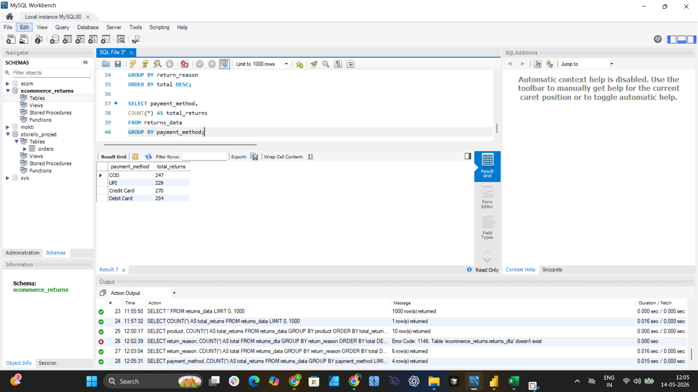
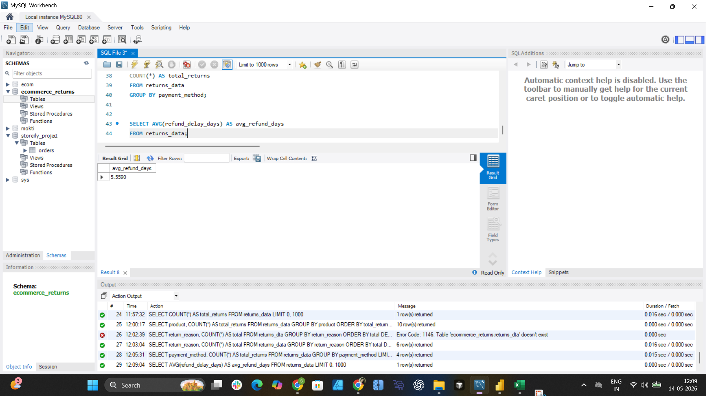

Ecommerce-focused SQL analysis built using MySQL Workbench to uncover return patterns, refund delays, product performance, and operational insights from real data.

Used SQL COUNT aggregate functions to calculate total ecommerce returns across the dataset.

Used GROUP BY and COUNT to identify products with highest return frequency, ordered by total returns DESC.

Analysed customer return reasons using SQL grouping and sorting to surface the most impactful return drivers.

Compared return volume across multiple payment methods to identify correlation between payment type and returns.

Calculated average refund processing time using the AVG() function to evaluate customer refund experience quality.